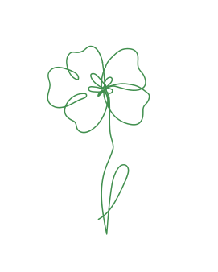

Portfolio site
Tema 06, består af min portfolio hjemmeside, samt en individuel mundtlig præsentation. På min hjemmeside har jeg gjort brug af læringsmålene fra 1.semester, herunder hvordan man griber processen an i forhold til at lave en hjemmeside. Jeg har dykket ned i designprincipperne, for at tiltrække opmærksomhed og formidle et klart budskab på en overskuelig måde.
Min portfolio hjemmeside handler om hvad jeg har fået af udbytte, samt hvilke opgaver jeg har afleveret gennem første semester. Derfor skulle det også afspejle mig som person. Dette kommer blandt andet til udtryk i farvevalget, de illustrerede blomster og det minimalistiske layout. Jeg har gjort brug af en stærk grøn farve, for at lave en kontrast til den meget milde lyserøde baggrund, og skabe hierarki ved at lave grønne linjer, der adskiller indholdet.
Jeg har taget udgangspunkt i rule of thirds og heat map-princippet. Dette har jeg gjort, for at organisere hvordan min tekst skulle placeres på siderne i forhold til hvordan brugerne læser i et F pattern.
Jeg udarbejdede først et moodboard og et styletile, for at finde et udtryk til mit site. Det endte ud i at skulle være imødekommende, minimalistisk og spændende, med brug af de samme grafiske former og farver, for at skabe balance og repetition i layoutet.